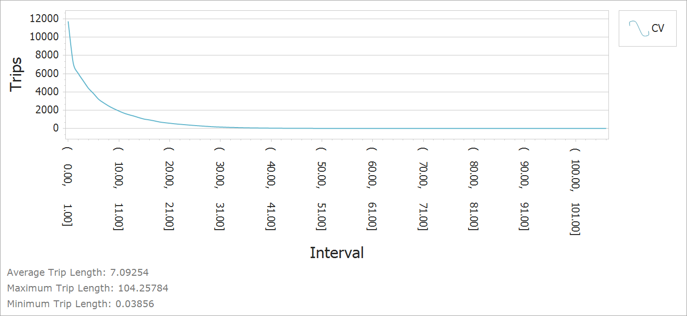
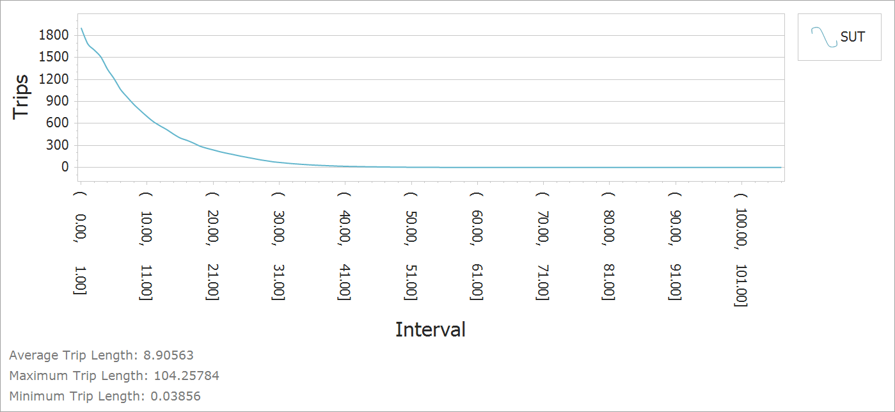
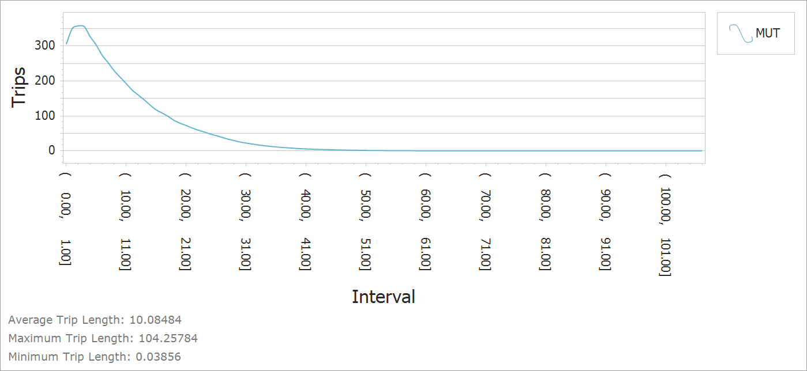

Commercial Vehicles and Trucks
Introduction
Commercial vehicles and trucks contribute significantly to congestion on major facilities in an urban area. In most instances, their travel behavior is distinct from residents of that urban area. To better capture commercial vehicle traffic in TRMG2, a separate set of commercial vehicle models were developed. These include trip generation, time of day, and distribution for three commercial vehicle types: commercial autos, vans, and pickups (CV), single unit trucks (SUT), and multi-unit trucks (MUT).
These classes are defined using the federal vehicle classification.
CV - Classes 1-3
SUT - Classes 5-7
MUT - Classes 8-13
The models use the Quick Response Freight Manual (QRFM) approach and are re-estimated when possible using the Triangle’s 2010 Commercial Vehicle survey.
Trip Rates
Initial estimation attempts led to counter-intuitive coefficeints and poor model fit statistics. A fundamental problem may have been regressing a 2010 survey against 2016 land use data. In addition, stakeholders noted some concerns with the survey. Given these issues, initial rates were borrowed from the New River Valley MPO travel model.
| Variable | CV | SUT | MUT |
|---|---|---|---|
| Industry | 1.00 | 0.260 | 0.135 |
| Retail | 0.89 | 0.253 | 0.065 |
| Office | 0.44 | 0.068 | 0.009 |
| Service_RateLow | 0.44 | 0.068 | 0.009 |
| Service_RateHigh | 0.44 | 0.068 | 0.009 |
| HH | 0.25 | 0.099 | 0.038 |
The initial rates were adjusted by comparing link flows to counts where they were available by SUT and MUT. Commercial vehicles used the same adjustment factor as SUT. The final rates are shown below.
| Variable | CV | SUT | MUT |
|---|---|---|---|
| Industry | 0.870 | 0.226 | 0.100 |
| Retail | 0.774 | 0.220 | 0.048 |
| Office | 0.383 | 0.059 | 0.007 |
| Service_RateLow | 0.383 | 0.059 | 0.007 |
| Service_RateHigh | 0.383 | 0.059 | 0.007 |
| HH | 0.218 | 0.086 | 0.028 |
Time of Day
The 2010 survey included trip departure time, which was used to categorize trips by time period. The table below shows the estimated time of day factors (time of day definitions).
| Vehicle Type | AM | MD | PM | NT |
|---|---|---|---|---|
| CV | 0.141 | 0.452 | 0.075 | 0.331 |
| SUT | 0.216 | 0.444 | 0.035 | 0.306 |
| MUT | 0.193 | 0.393 | 0.037 | 0.378 |
The relative distribution between peak and off-peak periods look reasonable, but the distribution between AM and PM peaks are not. There is almost no traffic in the PM period and far too much in the AM. This skew looks worse considering that the PM period is longer than the AM. Based on experience in other regions, Caliper spread peak demand evenly over the AM and PM periods according to the hours in each period. The final table is shown below.
| Vehicle Type | AM | MD | PM | NT |
|---|---|---|---|---|
| CV | 0.091 | 0.452 | 0.125 | 0.331 |
| SUT | 0.105 | 0.444 | 0.145 | 0.306 |
| MUT | 0.097 | 0.393 | 0.133 | 0.378 |
Directionality factors are not calculated for commercial vehicles and trucks. Instead, they are assumed to be evenly split by direction.
Distribution
Once generated, commercial vehicle and truck trips are distributed among zones using a gravity model. Unfortunately, the CV survey did not contain information on both ends of the trip, which meant it could not be used to estimate model parameters. Model parameters were borrowed from the NRVMPO travel model and are shown below.
| Class | Constraint | a | b | c |
|---|---|---|---|---|
| CV | Production | 5 | 1.00 | 0.1 |
| SUT | Production | 5 | 0.75 | 0.1 |
| MUT | Production | 5 | 0.60 | 0.1 |
The table below shows the resulting average commercial vehicle trip lengths in the model.
| Class | Average Time (min) | Averge Distance (mi) |
|---|---|---|
| CV | 10.0 | 7.1 |
| SUT | 12.0 | 8.9 |
| MUT | 13.3 | 10.1 |
The charts below show the trip length frequency distribution graphs (in miles).
CV

SUT

MUT

TransCAD GIS Software, 2022